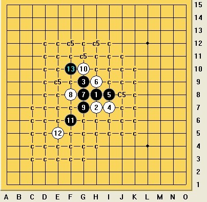

[游戏人间][共享]斜月局白6起黑胜
首页
五子棋交流
#1 [游戏人间][共享]斜月局白6起黑胜 作者：颐之X 发表时间：2011-7-1 6:09:04
=======上图对应的爱五子棋谱代码如下，以便你拆解：========
h8i9g7h9i8h7
======================================================以上是所给出题目的悬赏目标，悬赏论坛1000金币解决这个6手败。
悬赏复合条件：请给出这个6手败的地毯谱[是不是败，No Answer so far]
以下前20楼提供与主题相关的回帖者，一律给与献花鼓励。
------------------------------------------------------------
头绪1.

猎人可以根据本人所提供进程继续进行破解，5个C5属于还没解决分支。或者还有别的通道。
提交的任务最终还是以6手为地毯的起点。
［ 踵酃 于 2011-7-3 0:40:30 时奖励此帖[金币加 100 威望加1］
［此帖子已被 屏蔽 在 2011-9-16 5:55:40 编辑过］
#2 Re:[悬赏金币1000]斜月6手败请教 作者：极地剑客 发表时间：2011-7-1 6:29:26
请速度联系宇宙无敌骨灰级职业研究专家教授：天涯独行客，立马帮你搞定。 ［ 颐之X 于 2011-7-1 21:49:25 时花20金币送鲜花一朵］
#3 Re:[悬赏金币1000]斜月6手败请教 作者：游戏人间 发表时间：2011-7-1 6:46:23
=======上图对应的爱五子棋谱代码如下，以便你拆解：========
h8i9g7h9i8h7g8f8g9g6f10e11j6i7k7
====================================================== ［ 颐之X 于 2011-7-1 21:50:20 时花20金币送鲜花一朵］
#4 Re:[悬赏金币1000]斜月6手败请教 作者：死劲哭 发表时间：2011-7-1 9:17:30
=======上图对应的爱五子棋谱代码如下，以便你拆解：========
h8i9g7h9i8h7g8f8g9g6f10e11k9k8h10
====================================================== ［ 颐之X 于 2011-7-1 21:51:06 时花20金币送鲜花一朵］
#5 Re:[悬赏金币1000]斜月6手败请教 作者：小元 发表时间：2011-7-1 18:22:53
3楼的没什么问题了 ［ 颐之X 于 2011-7-1 21:52:30 时花20金币送鲜花一朵］
#6 Re:[悬赏金币1000]斜月6手败请教 作者：岑小鱼 发表时间：2011-7-1 19:33:54
关于这个变化，论坛上我看过的地毯谱都有2个了....LZ都不用心找找
［ 颐之X 于 2011-7-1 21:52:11 时花20金币送鲜花一朵］
#7 Re:Re:[悬赏金币1000]斜月6手败请教 作者：死劲哭 发表时间：2011-7-1 19:59:06
引用：
原文由 小元 发表于 2011-7-1 18:22:53 :
3楼的没什么问题了
您言外之意是什么？ ［ 颐之X 于 2011-7-1 21:54:05 时花20金币送鲜花一朵］
#8 Re:[悬赏金币1000]斜月6手败请教 作者：中中中中 发表时间：2011-7-1 20:47:43
=======上图对应的爱五子棋谱代码如下，以便你拆解：========
h8i9g7h9i8h7g8f8g9g6f10e11j6i7l6k6k7l8j4
====================================================== ［ 颐之X 于 2011-7-1 21:53:21 时花20金币送鲜花一朵］
#9 Re:[悬赏金币1000]斜月6手败请教 作者：颐之X 发表时间：2011-7-1 21:57:57
回6楼：为了节省时间才出重金找猎人寻找猎物，既然在论坛，谁先找出来，悬赏金就是谁的。
#10 Re:[悬赏金币1000]斜月6手败请教 作者：游戏人间 发表时间：2011-7-1 22:05:12
好像已经给你思路了。。。自己去做谱别期待馅饼。。。 ［ 颐之X 于 2011-7-3 0:05:27 时花20金币送鲜花一朵］
#11 Re:[悬赏金币1000]斜月6手败请教 作者：自来水 发表时间：2011-7-1 22:35:15
=======上图对应的爱五子棋谱代码如下，以便你拆解：========
h8i9g7h9i8h7g8f8g9g6f10e11j6i7k7k9
====================================================== ？？
？？
［ 颐之X 于 2011-7-3 0:06:53 时花20金币送鲜花一朵］
#12 Re:[悬赏金币1000]斜月6手败请教 作者：王小 发表时间：2011-7-2 15:02:33
=======上图对应的爱五子棋谱代码如下，以便你拆解：========
h8i9g7h9i8h7g8f8g9g6f10e11k9j8j6i7k7l8
======================================================我做到这样了， 后面有啥好建议
［ 茗弈宽容 于 2011-7-2 21:55:34 时花20金币送鲜花一朵］
［ 颐之X 于 2011-7-3 0:07:20 时花20金币送鲜花一朵］
#13 Re:Re:[悬赏金币1000]斜月6手败请教 作者：岑小鱼 发表时间：2011-7-2 16:10:23
引用：
原文由 岑小鱼 发表于 2011-7-1 19:33:54 :
关于这个变化，论坛上我看过的地毯谱都有2个了....LZ都不用心找找
［ 颐之X 于 2011-7-1 21:52:11 时花20金币送鲜花一朵］
非常惭愧.....我看错了........
［ 颐之X 于 2011-7-3 0:07:56 时花20金币送鲜花一朵］
#14 Re:[悬赏金币1000]斜月6手败请教 作者：自来水 发表时间：2011-7-2 18:44:16
= =。。。悲剧的16杀不来
［此帖子已被 自来水 在 2011-7-2 18:52:45 编辑过］
［ 颐之X 于 2011-7-3 0:08:53 时花20金币送鲜花一朵］
#15 Re:[悬赏金币1000]斜月6手败请教 作者：自来水 发表时间：2011-7-2 18:45:24
同型
=======上图对应的爱五子棋谱代码如下，以便你拆解：========
h8i9i8h9g8f8g9h7g7g6f10e11
====================================================== ［ 茗弈宽容 于 2011-7-2 21:56:07 时花20金币送鲜花一朵］
［ 颐之X 于 2011-7-3 0:09:39 时花20金币送鲜花一朵］
#16 Re:[悬赏金币1000]斜月6手败请教 作者：茗弈宽容 发表时间：2011-7-2 21:54:42
=======上图对应的爱五子棋谱代码如下，以便你拆解：========
h8i9g7h9i8h7g8f8g9g6f10e11k9j8j6i7k7l8m8
======================================================这个15呢？王小
=======上图对应的爱五子棋谱代码如下，以便你拆解：========
h8i9g7h9i8h7g8f8g9g6f10e11k9j8j10
====================================================== ［ 颐之X 于 2011-7-3 0:10:33 时花20金币送鲜花一朵］
#17 Re:Re:[悬赏金币1000]斜月6手败请教 作者：游戏人间 发表时间：2011-7-2 23:45:41
 11.rar
11.rar
刚做了个地毯。。验收吧。。。
［ 颐之X 于 2011-7-3 0:11:47 时花20金币送鲜花一朵］
［ 踵酃 于 2011-7-3 0:48:46 时花20金币送鲜花一朵］
［ 自来水 于 2011-7-3 1:00:32 时花20金币送鲜花一朵］
［ 岑小鱼 于 2011-7-3 11:34:41 时花20金币送鲜花一朵］
［ 侯军学棋 于 2011-7-3 13:04:28 时花20金币送鲜花一朵］
［ 隐藏菜系 于 2011-7-6 21:04:02 时花20金币送鲜花一朵］
#18 Re:[悬赏金币1000]斜月6手败请教 作者：自来水 发表时间：2011-7-2 23:48:36
 。。。那个究竟能不能杀啊
。。。那个究竟能不能杀啊
=======上图对应的爱五子棋谱代码如下，以便你拆解：========
h8i9g7h9i8h7g8f8g9g6f10e11j6i7k7k9
====================================================== ［ 颐之X 于 2011-7-3 0:12:29 时花20金币送鲜花一朵］
#19 Re:[悬赏金币1000]斜月6手败请教 作者：游戏人间 发表时间：2011-7-2 23:53:56
能的话也很复杂。。我拆了个杀到60多手的杀。。觉得没意义干脆放弃了。。。现在这路走法超简单适合地毯。。。 ［ 颐之X 于 2011-7-3 0:19:57 时花20金币送鲜花一朵］
#20 Re:[悬赏金币1000]斜月6手败请教 作者：怪 发表时间：2011-7-3 0:15:58
=======上图对应的爱五子棋谱代码如下，以便你拆解：========
h8h9i10i7j8j9i9h10i8k8g7f6
======================================================真杯具，刚下完想转这个变化看看会不会有盘端问题，结果居然刚好就出谱还刚好能避开。。。
ShowPost.asp?ThreadID=13940
［ 死劲哭 于 2011-7-3 0:18:08 时花20金币送鲜花一朵］
［ 颐之X 于 2011-7-3 0:20:56 时花20金币送鲜花一朵］
#21 Re:[悬赏金币1000]斜月6手败请教 作者：颐之X 发表时间：2011-7-3 0:18:21
悬赏金币1000已经过账，悬赏题已经被“游戏人间”猎得。
感谢楼上20楼的关注
#22 Re:Re:[悬赏金币1000]斜月6手败请教 作者：死劲哭 发表时间：2011-7-3 0:18:40
引用：
原文由 怪 发表于 2011-7-3 0:15:58 :
=======上图对应的爱五子棋谱代码如下，以便你拆解：========
h8h9i10i7j8j9i9h10i8k8g7f6
======================================================真杯具，刚下完想转这个变化看看会不会有盘端问题，结果居然刚好就出谱还刚好能避开。。。
ShowPost.asp?ThreadID=13940
［ 死劲哭 于 2011-7-3 0:18:08 时花20金币送鲜花一朵］

#23 Re:[悬赏金币1000]斜月6手败请教 作者：岑小鱼 发表时间：2011-7-3 11:52:54
=======上图对应的爱五子棋谱代码如下，以便你拆解：========
h8i9g7h9i8h7g8f8g9g6f10e11i11k9j9j8j11g11h10j10g10i10l11k11k10m12i12
======================================================大鱼强悍....
这里补充一个分支
［ 侯军学棋 于 2011-7-3 13:05:52 时花20金币送鲜花一朵］
#24 Re:[悬赏金币1000]斜月6手败请教 作者：陨落之城 发表时间：2011-7-6 20:58:05
这个名月困扰了一段时间，原来可以和这个通型，五子棋真是奇妙，感谢大鱼。
#25 Re:[悬赏金币1000]斜月6手败请教 作者：侯军学棋 发表时间：2011-7-14 16:59:15
=======上图对应的爱五子棋谱代码如下，以便你拆解：========
h8i9g6j7h9h10h5
======================================================不是这个7杀吗？
#26 Re:[游戏人间][共享]斜月局白6起黑胜 作者：小滚滚 发表时间：2012-11-14 11:52:31
#27 Re:[游戏人间][共享]斜月局白6起黑胜 作者：趁晨陈尘沉 发表时间：2012-11-29 10:11:58
黑7-f8,
#28 Re:[游戏人间][共享]斜月局白6起黑胜 作者：继续沉醉 发表时间：2012-11-29 23:00:56
全是地毯谱，那五子棋还有没有的下啊